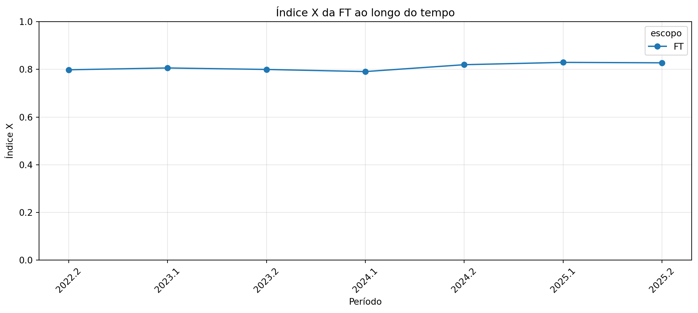
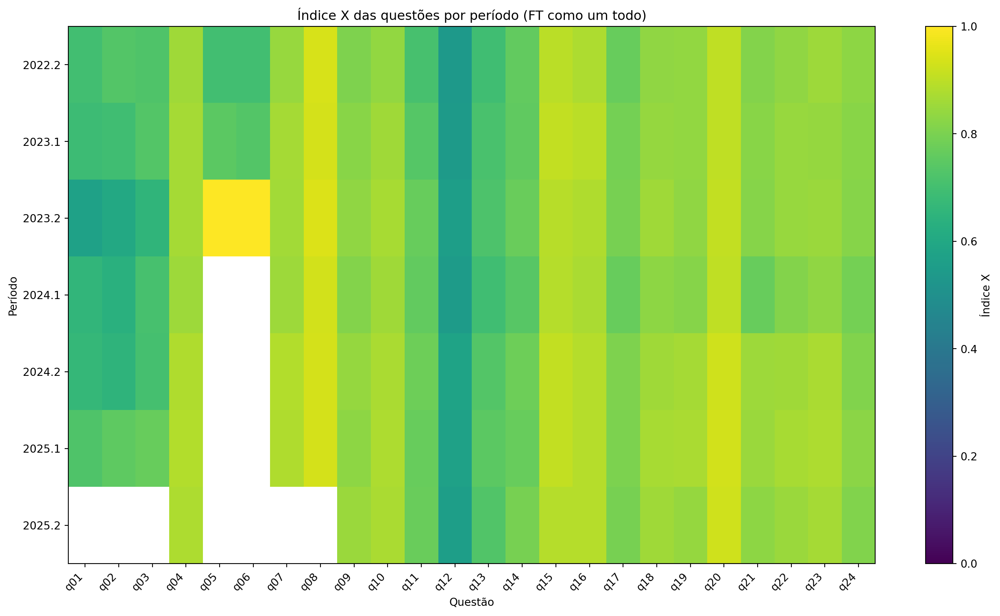
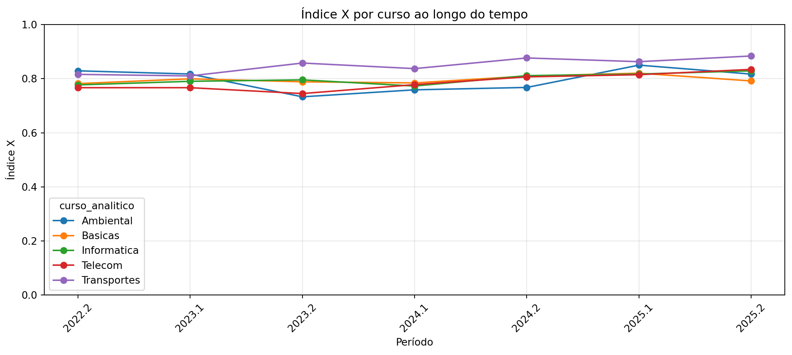
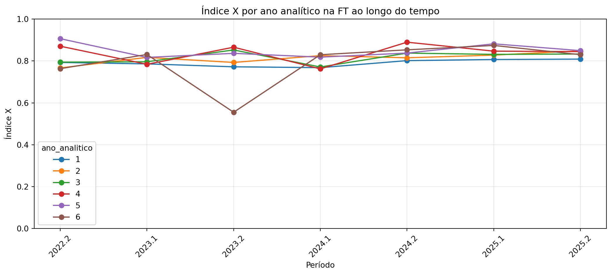
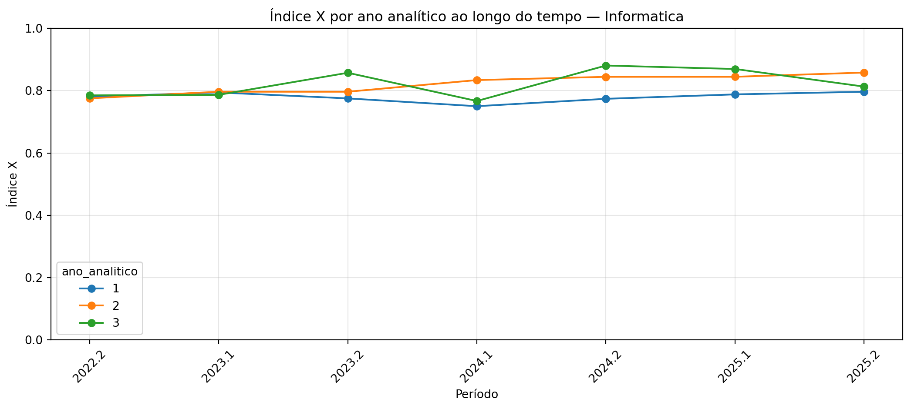
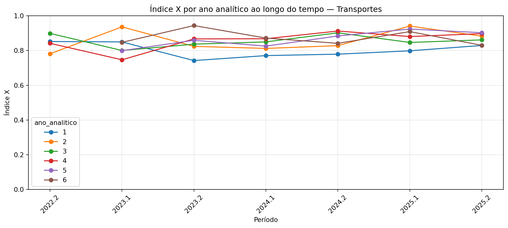
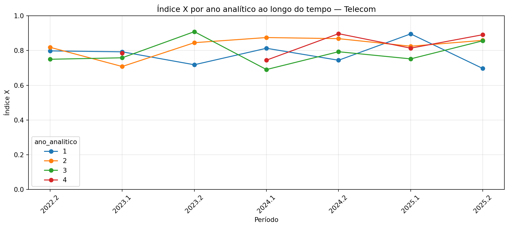
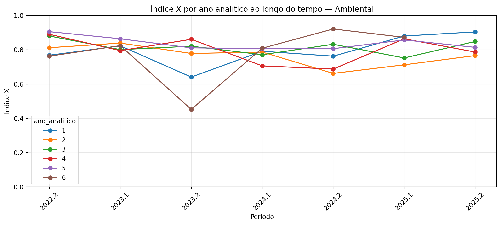
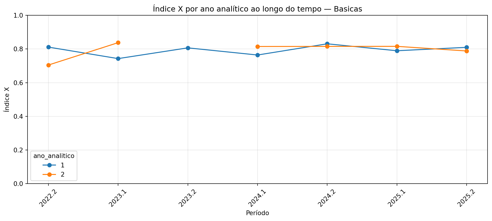
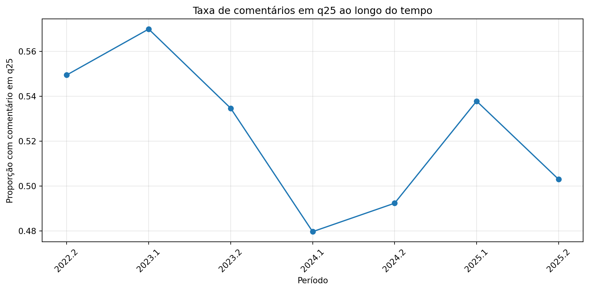

| codDisc | grupos_label | |
|---|---|---|
| 0 | EB101 | Ambiental, Informatica, Telecom, Transportes |
| 1 | EB102 | Ambiental, Informatica, Telecom, Transportes |
| 2 | EB103 | Ambiental, Telecom, Transportes |
| 3 | EB104 | Ambiental, Telecom, Transportes |
| 6 | EB201 | Ambiental, Telecom, Transportes |
| 8 | EB203 | Ambiental, Telecom, Transportes |
| 9 | EB204 | Ambiental, Telecom, Transportes |
| 12 | EB301 | Ambiental, Telecom, Transportes |
| 18 | EB308 | Ambiental, Telecom, Transportes |
| 19 | EB402 | Ambiental, Telecom, Transportes |
| 22 | EB405 | Ambiental, Telecom, Transportes |
| 23 | EB406 | Ambiental, Telecom, Transportes |
| 44 | EB807 | Ambiental, Telecom, Transportes |
| 103 | SI100 | Informatica, Telecom, Transportes |
| 161 | TT219 | Ambiental, Telecom, Transportes |
Análise institucional das avaliações enriquecidas da FT com índice X
Objetivo
Este material analisa a base de avaliações com foco institucional. O objetivo principal é responder perguntas como:
- A FT, como um todo, está evoluindo ou regredindo ao longo do tempo?
- Como essa evolução se comporta quando agrupamos por curso?
- Como essa evolução se comporta quando olhamos para o ano analítico das disciplinas?
Neste material não nos aprofundaremos em questões específicas. Aqui, as questões são analisadas em bloco, por meio do índice \(X\) agregado das respostas objetivas, e também por um relatório complementar com a evolução do índice \(X\) de cada questão ao longo do tempo.
Além do índice \(X\) agregado de cada grupo, também calculamos o índice \(X\) individual das disciplinas pertencentes a esse grupo em cada período. Esses valores são apresentados com boxplots, permitindo avaliar se o desempenho do grupo é relativamente homogêneo ou se existem disciplinas muito acima ou muito abaixo do comportamento central.
Neste material, a estrutura curricular é totalmente hardcoded com base em um mapeamento curado previamente transcrito dos currículos sugeridos da DAC no ano de 2026.
Índice X
Em vez de médias simples, usamos o índice \(X\) proposto para a escala Likert:
\[ X = \frac{(S/N)-1}{4} \]
onde:
- \(S\) = soma de todas as respostas válidas;
- \(N\) = número de respostas válidas;
- respostas com valor
0(“não consigo avaliar / não se aplica”) são desconsideradas; - como a escala válida vai de 1 a 5, o índice \(X\) varia de 0 a 1.
Interpretação:
- \(X \approx 0\) indica situação muito negativa;
- \(X \approx 1\) indica situação muito positiva;
- valores intermediários refletem a posição média institucional dentro da escala, já normalizada para o intervalo \([0,1]\).
Estrutura curricular hardcoded
Os links oficiais usados como referência para a transcrição manual foram:
- Informática (BSI):
https://www.dac.unicamp.br/sistemas/catalogos/grad/catalogo2026/cursos/94g/sugestao.html - Informática (TADS):
https://www.dac.unicamp.br/sistemas/catalogos/grad/catalogo2026/cursos/36t/sugestao.html - Transportes:
https://www.dac.unicamp.br/sistemas/catalogos/grad/catalogo2026/cursos/111g/sugestao.html - Telecom:
https://www.dac.unicamp.br/sistemas/catalogos/grad/catalogo2026/cursos/88g/sugestao.html - Ambiental:
https://www.dac.unicamp.br/sistemas/catalogos/grad/catalogo2026/cursos/89g/sugestao.html
Regras de categorização por curso
A regra utilizada foi:
- Disciplinas compartilhadas por 3 ou mais cursos entram em um grupo novo chamado Basicas;
- Essas disciplinas deixam de ser contabilizadas em Informática, Telecom, Ambiental e Transportes;
- Em evolução por curso, Basicas passa a ser tratado como um curso novo.
Além disso, para evitar duplicação indevida em análises por curso, adotamos a seguinte política conservadora:
- Disciplinas de 1 único curso ficam nesse curso;
- Disciplinas de 3 ou mais cursos viram Basicas;
- Disciplinas de 2 cursos ficam marcadas como Compartilhada_2;
- Disciplinas fora do mapeamento hardcoded ficam como Nao_mapeada.
Nas análises por curso, usamos apenas Informatica, Transportes, Telecom, Ambiental e Basicas.
As disciplinas selecionadas como Básicas são as mostradas na tabela a seguir:
Regras de categorização por ano analítico
Para padronizar a leitura institucional e evitar o problema de disciplinas aparecerem em .1 e .2 de maneira difícil de interpretar, usamos ano analítico em vez de semestre analítico:
- Semestres
(1, 2)correspondem ao 1º ano; - Semestres
(3, 4)correspondem ao 2º ano; - Semestres
(5, 6)correspondem ao 3º ano; - e assim por diante.
Ainda assim, mantemos uma regra conservadora:
- Se uma disciplina tem um único ano analítico dentro da sua categoria analítica, usamos esse ano;
- Se a disciplina aparece em mais de um ano analítico, ela fica marcada como ambígua e sai das análises por ano.
| curso_analitico | codDisc | anos_analiticos | semestres_sugeridos | grupos_originais | ano_analitico | anos_label | semestres_label | |
|---|---|---|---|---|---|---|---|---|
| 0 | Ambiental | EB105 | [1] | [1] | [Ambiental] | 1.0 | 1 | 1 |
| 1 | Ambiental | EB106 | [1] | [1] | [Ambiental] | 1.0 | 1 | 1 |
| 2 | Ambiental | EB202 | [1] | [2] | [Ambiental] | 1.0 | 1 | 2 |
| 3 | Ambiental | EB207 | [1] | [2] | [Ambiental] | 1.0 | 1 | 2 |
| 4 | Ambiental | EB302 | [3] | [5] | [Ambiental] | 3.0 | 3 | 5 |
| 5 | Ambiental | EB303 | [2] | [4] | [Ambiental] | 2.0 | 2 | 4 |
| 6 | Ambiental | EB305 | [2] | [4] | [Ambiental] | 2.0 | 2 | 4 |
| 7 | Ambiental | EB306 | [2] | [4] | [Ambiental] | 2.0 | 2 | 4 |
| 8 | Ambiental | EB307 | [2] | [3] | [Ambiental] | 2.0 | 2 | 3 |
| 9 | Ambiental | EB404 | [2] | [4] | [Ambiental] | 2.0 | 2 | 4 |
| 10 | Ambiental | EB407 | [2] | [3] | [Ambiental] | 2.0 | 2 | 3 |
| 11 | Ambiental | EB502 | [3] | [5] | [Ambiental] | 3.0 | 3 | 5 |
| 12 | Ambiental | EB503 | [3] | [6] | [Ambiental] | 3.0 | 3 | 6 |
| 13 | Ambiental | EB505 | [4] | [7] | [Ambiental] | 4.0 | 4 | 7 |
| 14 | Ambiental | EB506 | [4] | [7] | [Ambiental] | 4.0 | 4 | 7 |
| 15 | Ambiental | EB601 | [4] | [7] | [Ambiental] | 4.0 | 4 | 7 |
| 16 | Ambiental | EB602 | [4] | [8] | [Ambiental] | 4.0 | 4 | 8 |
| 17 | Ambiental | EB604 | [5] | [9] | [Ambiental] | 5.0 | 5 | 9 |
| 18 | Ambiental | EB607 | [5] | [10] | [Ambiental] | 5.0 | 5 | 10 |
| 19 | Ambiental | EB705 | [4] | [7] | [Ambiental] | 4.0 | 4 | 7 |
Enriquecimento analítico da base de avaliações
| codTurma | codDisc | curso_analitico | ano_analitico | anos_label | semestres_label | |
|---|---|---|---|---|---|---|
| 0 | 2022_2_g_ft_EB102_A | EB102 | Basicas | 1.0 | 1 | 1, 2 |
| 1 | 2022_2_g_ft_EB102_A | EB102 | Basicas | 1.0 | 1 | 1, 2 |
| 2 | 2022_2_g_ft_EB102_A | EB102 | Basicas | 1.0 | 1 | 1, 2 |
| 3 | 2022_2_g_ft_EB102_A | EB102 | Basicas | 1.0 | 1 | 1, 2 |
| 4 | 2022_2_g_ft_EB102_A | EB102 | Basicas | 1.0 | 1 | 1, 2 |
| 5 | 2022_2_g_ft_EB102_A | EB102 | Basicas | 1.0 | 1 | 1, 2 |
| 6 | 2022_2_g_ft_EB102_A | EB102 | Basicas | 1.0 | 1 | 1, 2 |
| 7 | 2022_2_g_ft_EB102_A | EB102 | Basicas | 1.0 | 1 | 1, 2 |
| 8 | 2022_2_g_ft_EB102_A | EB102 | Basicas | 1.0 | 1 | 1, 2 |
| 9 | 2022_2_g_ft_EB102_A | EB102 | Basicas | 1.0 | 1 | 1, 2 |
| 10 | 2022_2_g_ft_EB102_A | EB102 | Basicas | 1.0 | 1 | 1, 2 |
| 11 | 2022_2_g_ft_EB102_A | EB102 | Basicas | 1.0 | 1 | 1, 2 |
| 12 | 2022_2_g_ft_EB102_A | EB102 | Basicas | 1.0 | 1 | 1, 2 |
| 13 | 2022_2_g_ft_EB102_A | EB102 | Basicas | 1.0 | 1 | 1, 2 |
| 14 | 2022_2_g_ft_EB102_A | EB102 | Basicas | 1.0 | 1 | 1, 2 |
| 15 | 2022_2_g_ft_EB102_A | EB102 | Basicas | 1.0 | 1 | 1, 2 |
| 16 | 2022_2_g_ft_EB102_A | EB102 | Basicas | 1.0 | 1 | 1, 2 |
| 17 | 2022_2_g_ft_EB102_A | EB102 | Basicas | 1.0 | 1 | 1, 2 |
| 18 | 2022_2_g_ft_EB102_A | EB102 | Basicas | 1.0 | 1 | 1, 2 |
| 19 | 2022_2_g_ft_EB102_A | EB102 | Basicas | 1.0 | 1 | 1, 2 |
Cobertura do mapeamento
Nesta seção queremos entender a cobertura do mapeamento, para sabermos se a quantidade de alunos respondendo as questões é representativa dos alunos matriculados.
| curso_analitico | avaliacoes | turmas | disciplinas | com_ano_unico | perc_avaliacoes | |
|---|---|---|---|---|---|---|
| 3 | Informatica | 2737 | 196 | 38 | 2635 | 0.238435 |
| 1 | Basicas | 2549 | 124 | 15 | 1888 | 0.222058 |
| 4 | Nao_mapeada | 2490 | 306 | 119 | 0 | 0.216918 |
| 0 | Ambiental | 1474 | 107 | 30 | 1474 | 0.128408 |
| 6 | Transportes | 1027 | 108 | 37 | 1027 | 0.089468 |
| 5 | Telecom | 893 | 80 | 32 | 893 | 0.077794 |
| 2 | Compartilhada_2 | 309 | 28 | 7 | 199 | 0.026919 |
A seguir, mapeamos a quantidade de avaliações realizadas pelos alunos e informamos quantas delas foram utilizadas nesta análise.
| metrica | valor | |
|---|---|---|
| 0 | Total de avaliações | 11479 |
| 1 | Avaliações em cursos-alvo (inclui Basicas) | 8680 |
| 2 | Avaliações em disciplinas compartilhadas por 2... | 309 |
| 3 | Avaliações não mapeadas | 2490 |
| 4 | Avaliações com ano analítico definido | 8116 |
Evolução da FT como um todo
Primeiramente, mostramos os valores do índice X e a quantidade de respostas fornecidas pelos alunos em questões discursivas.
| periodo | avaliacoes | turmas | disciplinas | S | N | comentarios_q25 | comentarios_q26 | X | taxa_comentario_q25 | taxa_comentario_q26 | |
|---|---|---|---|---|---|---|---|---|---|---|---|
| 0 | 2022.2 | 1709 | 121 | 101 | 159306.0 | 37990 | 939 | 815 | 0.798342 | 0.549444 | 0.476887 |
| 1 | 2023.1 | 1767 | 118 | 95 | 164858.0 | 39030 | 1007 | 883 | 0.805970 | 0.569892 | 0.499717 |
| 2 | 2023.2 | 1298 | 130 | 110 | 116417.0 | 27726 | 694 | 572 | 0.799710 | 0.534669 | 0.440678 |
| 3 | 2024.1 | 2070 | 145 | 117 | 183127.0 | 43986 | 993 | 860 | 0.790825 | 0.479710 | 0.415459 |
| 4 | 2024.2 | 1377 | 151 | 129 | 125334.0 | 29293 | 678 | 566 | 0.819658 | 0.492375 | 0.411038 |
| 5 | 2025.1 | 1930 | 151 | 122 | 177628.0 | 41143 | 1038 | 873 | 0.829333 | 0.537824 | 0.452332 |
| 6 | 2025.2 | 1328 | 133 | 109 | 94413.0 | 21904 | 668 | 533 | 0.827577 | 0.503012 | 0.401355 |
A partir desses dados, é possível verificar a tendência da FT como um todo.
| escopo | n_periodos | slope | score_inicial | score_final | classificacao | |
|---|---|---|---|---|---|---|
| 0 | FT | 7 | 0.005514 | 0.798342 | 0.827577 | Evolução |
O gráfico a seguir mostra a evolução do índice X da FT com o tempo.

Dispersão entre disciplinas na FT por período
Distribuição do índice X das disciplinas na FT por período
Tendência geral da FT: Evolução | X inicial = 0.798 | X final = 0.828 | slope = 0.0055Evolução por questão ao longo do tempo
Nesta seção, calculamos o índice X de cada questão em cada período acadêmico e o apresentamos em um heatmap.

A tabela usada no heatmap é mostrada a seguir.
| questao | q01 | q02 | q03 | q04 | q05 | q06 | q07 | q08 | q09 | q10 | ... | q15 | q16 | q17 | q18 | q19 | q20 | q21 | q22 | q23 | q24 |
|---|---|---|---|---|---|---|---|---|---|---|---|---|---|---|---|---|---|---|---|---|---|
| periodo | |||||||||||||||||||||
| 2022.2 | 0.696104 | 0.731547 | 0.724237 | 0.858048 | 0.697160 | 0.698195 | 0.847450 | 0.938489 | 0.806490 | 0.836391 | ... | 0.897335 | 0.876979 | 0.766120 | 0.834362 | 0.838105 | 0.903790 | 0.812906 | 0.833872 | 0.853641 | 0.828379 |
| 2023.1 | 0.686969 | 0.693626 | 0.732854 | 0.866885 | 0.746605 | 0.731481 | 0.865930 | 0.933882 | 0.822917 | 0.855925 | ... | 0.906516 | 0.896034 | 0.790414 | 0.842165 | 0.837471 | 0.905754 | 0.822506 | 0.845150 | 0.841259 | 0.820399 |
| 2023.2 | 0.571511 | 0.602352 | 0.652482 | 0.866524 | 1.000000 | 1.000000 | 0.860747 | 0.945602 | 0.834957 | 0.868083 | ... | 0.893519 | 0.881559 | 0.792984 | 0.856783 | 0.835619 | 0.908353 | 0.819929 | 0.847415 | 0.849884 | 0.817804 |
| 2024.1 | 0.657793 | 0.634699 | 0.708666 | 0.854177 | NaN | NaN | 0.852036 | 0.933552 | 0.815706 | 0.856879 | ... | 0.887706 | 0.872881 | 0.768905 | 0.828467 | 0.818815 | 0.905156 | 0.768504 | 0.815777 | 0.832077 | 0.791844 |
| 2024.2 | 0.666424 | 0.648762 | 0.706503 | 0.881955 | NaN | NaN | 0.886000 | 0.936410 | 0.840776 | 0.871251 | ... | 0.906795 | 0.887900 | 0.806951 | 0.858133 | 0.865229 | 0.926621 | 0.852706 | 0.857715 | 0.874634 | 0.811709 |
| 2025.1 | 0.726518 | 0.751690 | 0.767510 | 0.883289 | NaN | NaN | 0.880643 | 0.935848 | 0.829220 | 0.876796 | ... | 0.908182 | 0.887441 | 0.802192 | 0.868407 | 0.872354 | 0.931464 | 0.849892 | 0.868421 | 0.877907 | 0.825170 |
| 2025.2 | NaN | NaN | NaN | 0.875675 | NaN | NaN | NaN | NaN | 0.851222 | 0.874334 | ... | 0.889140 | 0.889939 | 0.796142 | 0.858886 | 0.841342 | 0.926981 | 0.828390 | 0.848485 | 0.866629 | 0.812328 |
7 rows × 24 columns
Evolução por curso
Nesta seção usamos apenas as categorias principais:
- Informática
- Transportes
- Telecom
- Ambiental
- Basicas
Disciplinas Compartilhada_2 e Nao_mapeada ficam fora desta análise para evitar duplicações ou inferências curriculares frágeis.
| curso_analitico | periodo | avaliacoes | turmas | disciplinas | S | N | comentarios_q25 | comentarios_q26 | X | taxa_comentario_q25 | taxa_comentario_q26 | |
|---|---|---|---|---|---|---|---|---|---|---|---|---|
| 0 | Ambiental | 2022.2 | 186 | 13 | 11 | 17805.0 | 4125 | 132 | 112 | 0.829091 | 0.709677 | 0.602151 |
| 1 | Ambiental | 2023.1 | 296 | 14 | 14 | 27536.0 | 6450 | 184 | 156 | 0.817287 | 0.621622 | 0.527027 |
| 2 | Ambiental | 2023.2 | 255 | 18 | 15 | 21220.0 | 5397 | 158 | 134 | 0.732953 | 0.619608 | 0.525490 |
| 3 | Ambiental | 2024.1 | 219 | 17 | 14 | 18611.0 | 4612 | 119 | 117 | 0.758836 | 0.543379 | 0.534247 |
| 4 | Ambiental | 2024.2 | 151 | 14 | 13 | 13022.0 | 3199 | 79 | 84 | 0.767662 | 0.523179 | 0.556291 |
| 5 | Ambiental | 2025.1 | 183 | 18 | 16 | 17092.0 | 3884 | 100 | 79 | 0.850154 | 0.546448 | 0.431694 |
| 6 | Ambiental | 2025.2 | 184 | 13 | 12 | 13017.0 | 3050 | 105 | 80 | 0.816967 | 0.570652 | 0.434783 |
| 7 | Basicas | 2022.2 | 256 | 12 | 8 | 23573.0 | 5712 | 154 | 139 | 0.781731 | 0.601562 | 0.542969 |
| 8 | Basicas | 2023.1 | 424 | 18 | 10 | 40017.0 | 9532 | 277 | 245 | 0.799544 | 0.653302 | 0.577830 |
| 9 | Basicas | 2023.2 | 191 | 13 | 8 | 17007.0 | 4094 | 107 | 92 | 0.788532 | 0.560209 | 0.481675 |
| 10 | Basicas | 2024.1 | 468 | 23 | 13 | 41394.0 | 10005 | 279 | 232 | 0.784333 | 0.596154 | 0.495726 |
| 11 | Basicas | 2024.2 | 371 | 20 | 11 | 33604.0 | 7927 | 192 | 165 | 0.809796 | 0.517520 | 0.444744 |
| 12 | Basicas | 2025.1 | 504 | 21 | 10 | 46398.0 | 10837 | 290 | 252 | 0.820361 | 0.575397 | 0.500000 |
| 13 | Basicas | 2025.2 | 335 | 17 | 9 | 23347.0 | 5603 | 182 | 150 | 0.791719 | 0.543284 | 0.447761 |
| 14 | Informatica | 2022.2 | 402 | 25 | 17 | 36717.0 | 8938 | 187 | 158 | 0.776991 | 0.465174 | 0.393035 |
| 15 | Informatica | 2023.1 | 371 | 29 | 18 | 33728.0 | 8105 | 182 | 156 | 0.790345 | 0.490566 | 0.420485 |
| 16 | Informatica | 2023.2 | 279 | 24 | 16 | 25058.0 | 5991 | 145 | 121 | 0.795652 | 0.519713 | 0.433692 |
| 17 | Informatica | 2024.1 | 498 | 31 | 20 | 43054.0 | 10524 | 224 | 202 | 0.772758 | 0.449799 | 0.405622 |
| 18 | Informatica | 2024.2 | 256 | 28 | 19 | 23230.0 | 5472 | 125 | 92 | 0.811312 | 0.488281 | 0.359375 |
| 19 | Informatica | 2025.1 | 597 | 31 | 20 | 53838.0 | 12612 | 308 | 269 | 0.817198 | 0.515913 | 0.450586 |
| 20 | Informatica | 2025.2 | 334 | 28 | 18 | 23447.0 | 5432 | 148 | 115 | 0.829115 | 0.443114 | 0.344311 |
| 21 | Telecom | 2022.2 | 67 | 8 | 7 | 5958.0 | 1465 | 35 | 34 | 0.766724 | 0.522388 | 0.507463 |
| 22 | Telecom | 2023.1 | 130 | 10 | 9 | 11497.0 | 2827 | 61 | 66 | 0.766714 | 0.469231 | 0.507692 |
| 23 | Telecom | 2023.2 | 30 | 8 | 8 | 2575.0 | 647 | 8 | 9 | 0.744977 | 0.266667 | 0.300000 |
| 24 | Telecom | 2024.1 | 226 | 13 | 12 | 19976.0 | 4858 | 81 | 80 | 0.777995 | 0.358407 | 0.353982 |
| 25 | Telecom | 2024.2 | 131 | 13 | 12 | 11760.0 | 2782 | 45 | 33 | 0.806794 | 0.343511 | 0.251908 |
| 26 | Telecom | 2025.1 | 193 | 14 | 13 | 17655.0 | 4145 | 81 | 70 | 0.814837 | 0.419689 | 0.362694 |
| 27 | Telecom | 2025.2 | 116 | 14 | 13 | 8367.0 | 1929 | 54 | 45 | 0.834370 | 0.465517 | 0.387931 |
| 28 | Transportes | 2022.2 | 69 | 8 | 8 | 6716.0 | 1575 | 38 | 35 | 0.816032 | 0.550725 | 0.507246 |
| 29 | Transportes | 2023.1 | 172 | 15 | 15 | 16264.0 | 3835 | 113 | 94 | 0.810235 | 0.656977 | 0.546512 |
| 30 | Transportes | 2023.2 | 168 | 16 | 16 | 15887.0 | 3585 | 89 | 67 | 0.857880 | 0.529762 | 0.398810 |
| 31 | Transportes | 2024.1 | 185 | 16 | 16 | 17192.0 | 3953 | 89 | 67 | 0.837275 | 0.481081 | 0.362162 |
| 32 | Transportes | 2024.2 | 154 | 17 | 17 | 14859.0 | 3297 | 67 | 44 | 0.876706 | 0.435065 | 0.285714 |
| 33 | Transportes | 2025.1 | 119 | 17 | 17 | 11463.0 | 2575 | 78 | 56 | 0.862913 | 0.655462 | 0.470588 |
| 34 | Transportes | 2025.2 | 160 | 19 | 19 | 11875.0 | 2618 | 76 | 58 | 0.883976 | 0.475000 | 0.362500 |
Com os dados acima, foi possível computar uma tendência para todos os cursos.
| curso_analitico | n_periodos | slope | score_inicial | score_final | classificacao | |
|---|---|---|---|---|---|---|
| 3 | Telecom | 7 | 0.012893 | 0.766724 | 0.834370 | Evolução |
| 4 | Transportes | 7 | 0.011715 | 0.816032 | 0.883976 | Evolução |
| 2 | Informatica | 7 | 0.008062 | 0.776991 | 0.829115 | Evolução |
| 1 | Basicas | 7 | 0.003316 | 0.781731 | 0.791719 | Evolução |
| 0 | Ambiental | 7 | 0.002288 | 0.829091 | 0.816967 | Estável |
O gráfico a seguir mostra a variação do índice X ao longo do tempo para todos os cursos.

Dispersão entre disciplinas por curso e período
Distribuição do índice X das disciplinas por período — Informatica
Distribuição do índice X das disciplinas por período — Transportes
Distribuição do índice X das disciplinas por período — Telecom
Distribuição do índice X das disciplinas por período — Ambiental
Distribuição do índice X das disciplinas por período — Basicas
Análise por ano analítico: visão da FT
Nesta seção, olhamos o ano analítico das disciplinas, independentemente do curso analítico. Para evitar ruído, usamos apenas avaliações cuja disciplina recebeu um ano_analitico não ambíguo.
| ano_analitico | slope | score_inicial | score_final | classificacao |
|---|---|---|---|---|
| 1 | 0.004255 | 0.792886 | 0.808851 | Evolução |
| 2 | 0.010328 | 0.766620 | 0.848375 | Evolução |
| 3 | 0.006149 | 0.794366 | 0.833225 | Evolução |
| 4 | 0.002570 | 0.870536 | 0.844639 | Estável |
| 5 | -0.001440 | 0.906398 | 0.849325 | Regressão |
| 6 | 0.020898 | 0.763158 | 0.830056 | Evolução |

Dispersão entre disciplinas por ano analítico na FT
Distribuição do índice X das disciplinas por período — FT, ano analítico 1
Distribuição do índice X das disciplinas por período — FT, ano analítico 2
Distribuição do índice X das disciplinas por período — FT, ano analítico 3
Distribuição do índice X das disciplinas por período — FT, ano analítico 4
Distribuição do índice X das disciplinas por período — FT, ano analítico 5
Distribuição do índice X das disciplinas por período — FT, ano analítico 6
Análise por ano analítico categorizada por curso
Agora repetimos a análise por ano, mas separando os grupos de curso. Aqui usamos somente as avaliações com:
curso_analiticoemInformatica,Transportes,Telecom,Ambiental,Basicas;ano_analiticodefinido.
| curso_analitico | ano_analitico | slope | score_inicial | score_final | classificacao |
|---|---|---|---|---|---|
| Ambiental | 1 | 0.023047 | 0.768561 | 0.904835 | Evolução |
| Ambiental | 2 | -0.018144 | 0.812757 | 0.766773 | Regressão |
| Ambiental | 3 | -0.006467 | 0.880978 | 0.849123 | Regressão |
| Ambiental | 4 | -0.012389 | 0.891065 | 0.787349 | Regressão |
| Ambiental | 5 | -0.010475 | 0.906398 | 0.814666 | Regressão |
| Ambiental | 6 | 0.034237 | 0.763158 | 0.873057 | Evolução |
| Basicas | 1 | 0.004044 | 0.811275 | 0.809929 | Estável |
| Basicas | 2 | 0.008421 | 0.704689 | 0.788217 | Evolução |
| Informatica | 1 | 0.001232 | 0.780517 | 0.796592 | Evolução |
| Informatica | 2 | 0.014000 | 0.775386 | 0.858146 | Evolução |
| Informatica | 3 | 0.009770 | 0.784913 | 0.813027 | Evolução |
| Telecom | 1 | -0.002559 | 0.798013 | 0.696610 | Regressão |
| Telecom | 2 | 0.013472 | 0.818627 | 0.858737 | Evolução |
| Telecom | 3 | 0.006835 | 0.749764 | 0.856209 | Evolução |
| Telecom | 4 | 0.021842 | 0.784810 | 0.891176 | Evolução |
| Transportes | 1 | -0.004773 | 0.852083 | 0.829384 | Regressão |
| Transportes | 2 | 0.011364 | 0.781170 | 0.882789 | Evolução |
| Transportes | 3 | 0.001624 | 0.898936 | 0.861413 | Estável |
| Transportes | 4 | 0.017145 | 0.841767 | 0.897420 | Evolução |
| Transportes | 5 | 0.021973 | 0.799286 | 0.902567 | Evolução |
| Transportes | 6 | -0.006276 | 0.847059 | 0.830056 | Regressão |
Gráficos por curso





Boxplots por curso e ano analítico
Distribuição do índice X das disciplinas por período — Informatica, ano analítico 1
Distribuição do índice X das disciplinas por período — Informatica, ano analítico 2
Distribuição do índice X das disciplinas por período — Informatica, ano analítico 3
Distribuição do índice X das disciplinas por período — Transportes, ano analítico 1
Distribuição do índice X das disciplinas por período — Transportes, ano analítico 2
Distribuição do índice X das disciplinas por período — Transportes, ano analítico 3
Distribuição do índice X das disciplinas por período — Transportes, ano analítico 4
Distribuição do índice X das disciplinas por período — Transportes, ano analítico 5
Distribuição do índice X das disciplinas por período — Transportes, ano analítico 6
Distribuição do índice X das disciplinas por período — Telecom, ano analítico 1
Distribuição do índice X das disciplinas por período — Telecom, ano analítico 2
Distribuição do índice X das disciplinas por período — Telecom, ano analítico 3
Distribuição do índice X das disciplinas por período — Telecom, ano analítico 4
Distribuição do índice X das disciplinas por período — Ambiental, ano analítico 1
Distribuição do índice X das disciplinas por período — Ambiental, ano analítico 2
Distribuição do índice X das disciplinas por período — Ambiental, ano analítico 3
Distribuição do índice X das disciplinas por período — Ambiental, ano analítico 4
Distribuição do índice X das disciplinas por período — Ambiental, ano analítico 5
Distribuição do índice X das disciplinas por período — Ambiental, ano analítico 6
Distribuição do índice X das disciplinas por período — Basicas, ano analítico 1
Distribuição do índice X das disciplinas por período — Basicas, ano analítico 2
Relatório 7 — Participação e comentários ao longo do tempo
Nesta seção, medimos a proporção de avaliações que contêm comentário em q25 e em q26 ao longo do tempo.
| periodo | n_avaliacoes | n_turmas | taxa_comentario_q25 | taxa_comentario_q26 | |
|---|---|---|---|---|---|
| 0 | 2022.2 | 1709 | 121 | 0.549444 | 0.476887 |
| 1 | 2023.1 | 1767 | 118 | 0.569892 | 0.499717 |
| 2 | 2023.2 | 1298 | 130 | 0.534669 | 0.440678 |
| 3 | 2024.1 | 2070 | 145 | 0.479710 | 0.415459 |
| 4 | 2024.2 | 1377 | 151 | 0.492375 | 0.411038 |
| 5 | 2025.1 | 1930 | 151 | 0.537824 | 0.452332 |
| 6 | 2025.2 | 1328 | 133 | 0.503012 | 0.401355 |


Leituras úteis adicionais
Último período disponível por curso
| curso_analitico | periodo | avaliacoes | turmas | disciplinas | S | N | comentarios_q25 | comentarios_q26 | X | taxa_comentario_q25 | taxa_comentario_q26 | |
|---|---|---|---|---|---|---|---|---|---|---|---|---|
| 34 | Transportes | 2025.2 | 160 | 19 | 19 | 11875.0 | 2618 | 76 | 58 | 0.883976 | 0.475000 | 0.362500 |
| 27 | Telecom | 2025.2 | 116 | 14 | 13 | 8367.0 | 1929 | 54 | 45 | 0.834370 | 0.465517 | 0.387931 |
| 20 | Informatica | 2025.2 | 334 | 28 | 18 | 23447.0 | 5432 | 148 | 115 | 0.829115 | 0.443114 | 0.344311 |
| 6 | Ambiental | 2025.2 | 184 | 13 | 12 | 13017.0 | 3050 | 105 | 80 | 0.816967 | 0.570652 | 0.434783 |
| 13 | Basicas | 2025.2 | 335 | 17 | 9 | 23347.0 | 5603 | 182 | 150 | 0.791719 | 0.543284 | 0.447761 |
Último período disponível por ano analítico na FT
| ano_analitico | periodo | avaliacoes | turmas | disciplinas | S | N | comentarios_q25 | comentarios_q26 | X | taxa_comentario_q25 | taxa_comentario_q26 | |
|---|---|---|---|---|---|---|---|---|---|---|---|---|
| 6 | 1 | 2025.2 | 416 | 25 | 14 | 29309.0 | 6920 | 232 | 187 | 0.808851 | 0.557692 | 0.449519 |
| 13 | 2 | 2025.2 | 262 | 23 | 18 | 18791.0 | 4277 | 120 | 95 | 0.848375 | 0.458015 | 0.362595 |
| 20 | 3 | 2025.2 | 142 | 17 | 15 | 10035.0 | 2316 | 57 | 46 | 0.833225 | 0.401408 | 0.323944 |
| 27 | 4 | 2025.2 | 146 | 14 | 14 | 10618.0 | 2425 | 85 | 64 | 0.844639 | 0.582192 | 0.438356 |
| 34 | 5 | 2025.2 | 81 | 5 | 5 | 5866.0 | 1334 | 35 | 24 | 0.849325 | 0.432099 | 0.296296 |
| 41 | 6 | 2025.2 | 11 | 1 | 1 | 769.0 | 178 | 5 | 6 | 0.830056 | 0.454545 | 0.545455 |
Disciplinas básicas identificadas
| codDisc | grupos_label | |
|---|---|---|
| 0 | EB101 | Ambiental, Informatica, Telecom, Transportes |
| 1 | EB102 | Ambiental, Informatica, Telecom, Transportes |
| 2 | EB103 | Ambiental, Telecom, Transportes |
| 3 | EB104 | Ambiental, Telecom, Transportes |
| 6 | EB201 | Ambiental, Telecom, Transportes |
| 8 | EB203 | Ambiental, Telecom, Transportes |
| 9 | EB204 | Ambiental, Telecom, Transportes |
| 12 | EB301 | Ambiental, Telecom, Transportes |
| 18 | EB308 | Ambiental, Telecom, Transportes |
| 19 | EB402 | Ambiental, Telecom, Transportes |
| 22 | EB405 | Ambiental, Telecom, Transportes |
| 23 | EB406 | Ambiental, Telecom, Transportes |
| 44 | EB807 | Ambiental, Telecom, Transportes |
| 103 | SI100 | Informatica, Telecom, Transportes |
| 161 | TT219 | Ambiental, Telecom, Transportes |
Disciplinas compartilhadas por exatamente 2 cursos
| codDisc | grupos_curso | n_grupos | curso_analitico | grupos_label | |
|---|---|---|---|---|---|
| 10 | EB205 | [Ambiental, Transportes] | 2 | Compartilhada_2 | Ambiental, Transportes |
| 20 | EB403 | [Ambiental, Transportes] | 2 | Compartilhada_2 | Ambiental, Transportes |
| 25 | EB501 | [Ambiental, Transportes] | 2 | Compartilhada_2 | Ambiental, Transportes |
| 28 | EB504 | [Ambiental, Transportes] | 2 | Compartilhada_2 | Ambiental, Transportes |
| 39 | EB708 | [Ambiental, Telecom] | 2 | Compartilhada_2 | Ambiental, Telecom |
| 41 | EB801 | [Ambiental, Transportes] | 2 | Compartilhada_2 | Ambiental, Transportes |
| 66 | EB941 | [Ambiental, Transportes] | 2 | Compartilhada_2 | Ambiental, Transportes |
Tabelas finais úteis para exportação
Diagnóstico institucional resumido
| periodo | avaliacoes | turmas | disciplinas | S | N | comentarios_q25 | comentarios_q26 | X | taxa_comentario_q25_x | taxa_comentario_q26_x | taxa_comentario_q25_y | taxa_comentario_q26_y | |
|---|---|---|---|---|---|---|---|---|---|---|---|---|---|
| 0 | 2022.2 | 1709 | 121 | 101 | 159306.0 | 37990 | 939 | 815 | 0.798342 | 0.549444 | 0.476887 | 0.549444 | 0.476887 |
| 1 | 2023.1 | 1767 | 118 | 95 | 164858.0 | 39030 | 1007 | 883 | 0.805970 | 0.569892 | 0.499717 | 0.569892 | 0.499717 |
| 2 | 2023.2 | 1298 | 130 | 110 | 116417.0 | 27726 | 694 | 572 | 0.799710 | 0.534669 | 0.440678 | 0.534669 | 0.440678 |
| 3 | 2024.1 | 2070 | 145 | 117 | 183127.0 | 43986 | 993 | 860 | 0.790825 | 0.479710 | 0.415459 | 0.479710 | 0.415459 |
| 4 | 2024.2 | 1377 | 151 | 129 | 125334.0 | 29293 | 678 | 566 | 0.819658 | 0.492375 | 0.411038 | 0.492375 | 0.411038 |
| 5 | 2025.1 | 1930 | 151 | 122 | 177628.0 | 41143 | 1038 | 873 | 0.829333 | 0.537824 | 0.452332 | 0.537824 | 0.452332 |
| 6 | 2025.2 | 1328 | 133 | 109 | 94413.0 | 21904 | 668 | 533 | 0.827577 | 0.503012 | 0.401355 | 0.503012 | 0.401355 |
Tendência por curso
| curso_analitico | n_periodos | slope | score_inicial | score_final | classificacao | |
|---|---|---|---|---|---|---|
| 3 | Telecom | 7 | 0.012893 | 0.766724 | 0.834370 | Evolução |
| 4 | Transportes | 7 | 0.011715 | 0.816032 | 0.883976 | Evolução |
| 2 | Informatica | 7 | 0.008062 | 0.776991 | 0.829115 | Evolução |
| 1 | Basicas | 7 | 0.003316 | 0.781731 | 0.791719 | Evolução |
| 0 | Ambiental | 7 | 0.002288 | 0.829091 | 0.816967 | Estável |
Tendência por curso e ano analítico
| curso_analitico | ano_analitico | n_periodos | slope | score_inicial | score_final | classificacao | |
|---|---|---|---|---|---|---|---|
| 0 | Ambiental | 1 | 7 | 0.023047 | 0.768561 | 0.904835 | Evolução |
| 1 | Ambiental | 2 | 7 | -0.018144 | 0.812757 | 0.766773 | Regressão |
| 2 | Ambiental | 3 | 7 | -0.006467 | 0.880978 | 0.849123 | Regressão |
| 3 | Ambiental | 4 | 7 | -0.012389 | 0.891065 | 0.787349 | Regressão |
| 4 | Ambiental | 5 | 7 | -0.010475 | 0.906398 | 0.814666 | Regressão |
| 5 | Ambiental | 6 | 6 | 0.034237 | 0.763158 | 0.873057 | Evolução |
| 6 | Basicas | 1 | 7 | 0.004044 | 0.811275 | 0.809929 | Estável |
| 7 | Basicas | 2 | 6 | 0.008421 | 0.704689 | 0.788217 | Evolução |
| 8 | Informatica | 1 | 7 | 0.001232 | 0.780517 | 0.796592 | Evolução |
| 9 | Informatica | 2 | 7 | 0.014000 | 0.775386 | 0.858146 | Evolução |
| 10 | Informatica | 3 | 7 | 0.009770 | 0.784913 | 0.813027 | Evolução |
| 11 | Telecom | 1 | 7 | -0.002559 | 0.798013 | 0.696610 | Regressão |
| 12 | Telecom | 2 | 7 | 0.013472 | 0.818627 | 0.858737 | Evolução |
| 13 | Telecom | 3 | 7 | 0.006835 | 0.749764 | 0.856209 | Evolução |
| 14 | Telecom | 4 | 5 | 0.021842 | 0.784810 | 0.891176 | Evolução |
| 15 | Transportes | 1 | 7 | -0.004773 | 0.852083 | 0.829384 | Regressão |
| 16 | Transportes | 2 | 7 | 0.011364 | 0.781170 | 0.882789 | Evolução |
| 17 | Transportes | 3 | 7 | 0.001624 | 0.898936 | 0.861413 | Estável |
| 18 | Transportes | 4 | 7 | 0.017145 | 0.841767 | 0.897420 | Evolução |
| 19 | Transportes | 5 | 6 | 0.021973 | 0.799286 | 0.902567 | Evolução |
| 20 | Transportes | 6 | 6 | -0.006276 | 0.847059 | 0.830056 | Regressão |
Conclusões metodológicas
- A evolução geral da FT é analisada com todas as avaliações, usando o índice \(X\).
- A evolução por curso usa um critério conservador:
- disciplinas de 1 curso ficam no curso correspondente;
- disciplinas de 3 ou mais cursos viram Basicas;
- disciplinas de 2 cursos ficam em
Compartilhada_2e saem da comparação principal por curso.
- A análise por ano analítico usa apenas disciplinas com ano analítico não ambíguo, para evitar imputações arbitrárias.
- O heatmap por questão mostra a evolução do índice X por questão ao longo do tempo, considerando a FT como um todo.
- Os boxplots acrescentam uma leitura de homogeneidade versus disparidade entre disciplinas dentro de cada grupo, revelando se o índice agregado do grupo esconde distribuições internas muito espalhadas.
- As taxas de comentários em
q25eq26mostram a proporção de avaliações com comentários discursivos ao longo dos períodos. - Como o índice \(X\) ignora respostas
0, ele respeita explicitamente a regra da escala Likert informada.